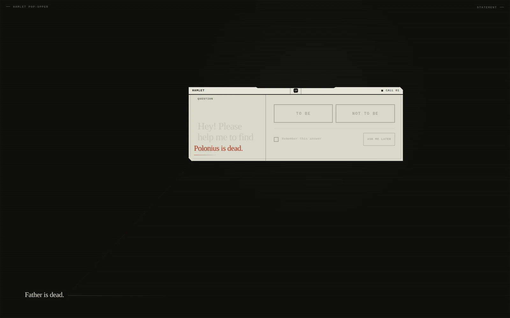
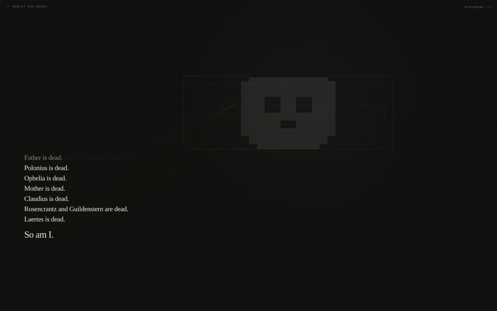

A browser-native miniature adaptation · by Mozare · 2026
Hamlet Pop-Upper
Father is dead before the first question appears. Hamlet's sentence then returns through an apparatus that remembers selections, schedules deferrals, and meets each death in another state.

Primary surfaceRelease v1.8
Sound is optional and begins only after visitor input.
“Remember this answer” stores the selected answer in this browser.
SELECTED VIEWS
Three views
Three images hold distinct reading conditions without reducing the work to a single representative screen.
01
The question
The popup carries “To be” and “Not to be” as two selectable states.
02
The encounter
A scored death crosses the current state of the asking apparatus and marks its surface.

03
The afterimage
After the final dialog closes, its skull-like afterimage sits behind the accumulated list of deaths.
CONTEXT
Two inherited forms
Hamlet Pop-Upper works with two inherited forms: Hamlet's question and the popup's procedure for interrupting attention, requesting a decision, retaining a selection, and returning. Their contact becomes the material of the adaptation. Literary language enters an interface process; the interface acquires a dramatic role.
The work uses an in-page HTML dialog rather than a separate browser window. The fixed death score and the visitor's variable responses keep separate times inside that dialog. Each death is classified by the state it encounters, and the classification changes the line, position, and density of the trace left on the apparatus. A remembered answer therefore participates in later events as active state, while a deferral composes the interval in which an event may arrive.
The selection persists as data. At the next call, the person decides how it speaks for them.
EDITION AND ACCESS
Work identity
A browser-native miniature adaptation
Mozare
Mohammad Zare
Release v1.8 · source head b4ea5b1
English
Answer, remember, or defer; the score keeps its own time
Zare, Mohammad (Mozare). Hamlet Pop-Upper. Browser-native miniature adaptation, version 1.8, 2026.